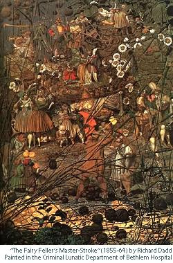

John Whitworth
You Know
You know what they said? They said
People like you, they’re wrong in the head,
People like you, they’d be better dead.
Yes that’s what they said, you know.
You know what they did? What they did
They messed with the brain of a nice little kid,
He was nicer than you and he ran and hid.
Still that’s what they did, you know...
You know how they came? How they came
Was a swish of smoke and a fizz of flame
When the name of the game doesn’t stay the same.
Say that’s how they came, you know...
You know what it means? What it means
Is it’s worse than the dreams of the magazines,
Smashing your heart to smithereens
See that’s what it means, you know.
You know when they’ll go? When they’ll go
Is when Lickety-split and that Old Jim Crow
Both rattle the bones of Geronimo,
So that’s when they’ll go, you know.
You know what I am? What I am
Is the flim-flam man and not worth a damn,
I’m not there at all, I’m a hologram.
Yes that’s what I am, you know.

Shakespearean Paradelle
For Billy Collins who invented them and then pretended that he hadn’t
It is the cause, it is the cause, my soul
It is the cause, it is the cause, my soul
Let me not name it to you, you chaste stars
Let me not name it to you, you chaste stars
You cause the cause my soul. It is the stars
Let me name it to you. It is not chaste
The multitudinous seas incarnadine
The multitudinous seas incarnadine
Making the green one red
Making the green one red
Making the multitudinous red seas
Incarnadine one green
Be not afraid. The isle is full of noises.
Be not afraid. The isle is full of noises.
Sounds and sweet airs that give delight and hurt not
Sounds and sweet airs that give delight and hurt not
Be hurt not sweet, the full airs give delight
That isle of sounds and noises, and is not afraid
Hurt not the name, chaste one, sweet you.
Green soul, be it incarnadine,
The cause is not afraid!
It is not the stars, it is the full isle
That multitudinous delight
My seas, the sounds, noises, airs, me.
Belonging
I have input; you must nit-pick; he invariably moans.
I am svelte and slender; you are skinny; she’s a bag of bones.
I’m romantic; you’re a chaser: he is always on the job.
I’m sophisticated; you’re a bit class-conscious; she’s a snob.
Ours is antique classic; yours is second-user; theirs is junk.
I’m amusing and vivacious; you’re a chatterbox; she’s drunk.
I’m curvaceous; you’re full-figured; she’s disgustingly obese.
We’ve been slandered; you’re quite dodgy; they’re all known to the police.
I’ve a theory; you’ve got views; he’s just a gambler with a hunch.
I’m a poet; you’re a dreamer; she’s completely out to lunch.
I’m a bit abstracted; you’re forgetful; he’s amnesiac.
I enjoy creative writing; you’re a journo; she’s a hack.
We respect tradition; you’re conservative; they’re from the ark.
I use modern business methods; you’re go-getting; he’s a shark.
I like discipline; you’re stroppy; he gets mad and hits the kids.
We require a fresh investment; you need cash; they’re on the skids.
I renounced the rat race; you’re between positions; he’s a loser.
We unwind while you relax and they get plastered in the boozer.
I’m in crisis; you’ve had breakdowns, he’s gone off his bloody head.
I gave up my fight with illness; you passed on; she croaked.
I gave up my fight with illness; you passed on; she croaked. (We’re dead.)
The Fairy Feller’s Master-StrokeRobert Dadd d. 1843. Richard Dadd d. 1886
You would
Not want to be
The dad of Richard Dadd.
A sadder dad you’d never see!
He died.
Dadd’s dad.
The parricide,
Bereft him of his life.
Up to the heft he plunged the knife,
Bad Dadd,
Mad son.
He did for dad,
And when the deed was done,
The madhouse had him, mad, sad, bad,
For good.
John Whitworth is oldish, fattish, baldish. His tenth book of poems Being the Bad Guy was published by the great and good Harry Chambers in Cornwall. Les Murray likes it and so should you.
|